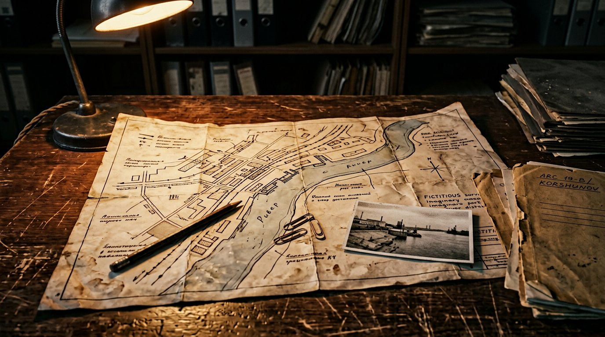

01 La zone économique
Pourquoi Tarkov est coupée du monde
Norvinsk est une région fictive, imaginée comme une zone économique de contact entre Russie et Europe. Tarkov, l’une de ses grandes villes, attire des entreprises internationales. TerraGroup y installe notamment des activités de recherche, au cœur du scandale qui précède le conflit.
Des opérations des sociétés militaires privées aux évacuations, la crise finit par isoler la ville. Dès le départ d’Escape from Tarkov, le personnage a perdu le contact avec son commandement. Son objectif n’est plus simplement la mission pour laquelle il était venu : il doit trouver comment sortir.
Le point de départ est établi par le synopsis de Battlestate et le prologue du film Raid.

02 Au-delà de l’uniforme
Qui agit à Norvinsk ?
USEC et BEAR sont des sociétés militaires privées, pas deux équipes qui résument toute la ville. Le film et le synopsis donnent leur rôle dans la crise. Cela ne prédit pas la réaction d’un adversaire en raid.
Multinationale
TerraGroup
Implantée dans la zone de Norvinsk, elle est au centre de l’enquête sur des activités illégales. Elle engage USEC. Ground Zero abrite le siège de la société dans Tarkov.
United Security
USEC
Cette société militaire privée travaille pour TerraGroup. Le synopsis la décrit comme chargée d’entraver les enquêtes et de couvrir les activités du groupe.
Battle Encounter Assault Regiment
BEAR
Cette société militaire privée est liée aux autorités russes selon le synopsis. Ses opérateurs recherchent des preuves sur TerraGroup. Dans le jeu, USEC et BEAR sont les deux factions proposées au PMC.
Survivants et bandes locales
Scavs
Le nom vient de scavengers, ceux qui récupèrent ce qui reste. Les Scavs ne forment pas une seule armée : le terme désigne notamment des groupes qui exploitent le vide laissé dans la ville évacuée.
Encadrement de la zone
ONU et forces russes
Le film situe ces forces autour de l’évacuation et du blocus. UNTAR apparaît comme présence onusienne dans l’univers ; l’annonce Seasonal UNTAR Control ne date pas le blocus fictif.
Anciens USEC
Rogues
Des anciens opérateurs USEC agissent pour leur propre groupe, notamment à Lighthouse. Ne confondez pas leur histoire avec celle de tous les PMC USEC, ou avec une règle d’IA stable de patch en patch.
Groupe distinct
Black Division
Le groupe intervient dans des contenus de campagne et de saison. Les publications de BSG le montrent en action ; elles ne suffisent pas à établir toutes ses intentions ni une hiérarchie complète.
Intermédiaires
Marchands
Therapist, Fence et les autres servent de relais pour les soins, l’équipement et l’accès à certains lieux. Ils ne constituent pas une faction unifiée. Leurs objectifs ne se confondent pas forcément avec ceux du PMC.
Ce qu’on peut interpréter : selon le personnage qui parle, une même opération peut être décrite comme protection, enquête ou représailles. Les débats de joueurs sur « le bon camp » ne tranchent ni le récit ni la responsabilité individuelle des opérateurs.
03 Deux calendriers à distinguer
Des Contract Wars à la campagne
Les étapes ci-dessous ordonnent le contexte sans inventer de date interne. Contract Wars désigne le conflit dans la fiction et un jeu du même univers. Hired Ops précède EFT comme projet dans cet univers ; ses dates de parution ne datent pas les événements de Tarkov.
- Avant le conflit
La zone attire TerraGroup
Norvinsk est créée pour faciliter les échanges. Le carton du film Raid situe l’implantation de la société à Tarkov en 2015 ; c’est un repère de ce film, pas la date de tous les événements du jeu. · Source
- Contract Wars
Les sociétés militaires privées s’affrontent
Des soupçons visent TerraGroup. USEC et BEAR opèrent pour des intérêts rivaux. Le passé de Factory, une usine passée sous le contrôle de TerraGroup, rattache le lieu aux combats des Contract Wars. · Source
- Blocus
Évacuations puis isolement
L’intervention des autorités russes et de l’ONU s’accompagne d’un bouclage de la région. Une partie des habitants et des opérateurs se retrouve prise dans la zone, tandis que les groupes locaux se réorganisent. · Source
- Départ du joueur
Les ordres ne suffisent plus
Coupé de sa chaîne de commandement, le PMC cherche des contacts et des sorties. Tour fait du quartier d’affaires de Ground Zero le premier repère de sa campagne. · Source
- Campagne 1.0
Plusieurs pistes à suivre
Les chapitres prolongent l’enquête et la recherche d’une fuite. Certains se croisent et les décisions du personnage ont des conséquences : la liste des épisodes ne fixe pas un ordre unique. · Source
Dates de publication · hors fiction
- Battlestate publie le montage intégral de Raid.
- Sortie d’EFT 1.0 et de sa campagne non linéaire.
- Le patch 1.0.5.0 ajoute le chapitre Boreas et le lieu Icebreaker.
04 Lieux et récit
Des cartes aux chapitres
Le scénario se lit dans l’onglet de l’histoire, séparément des tâches ordinaires de marchands. Ces repères ne sont ni un ordre imposé pour tous les chapitres ni un guide d’accès.
- Ground Zero
- Tour donne le premier point de repère : le quartier d’affaires de Tarkov et les premiers accès à débloquer. Consulter le chapitre Tour.
- Streets of Tarkov
- La ville au-delà du quartier d’affaires. Tour relie les premiers échanges avec Therapist à l’accès à Streets.
- The Lab et The Labyrinth
- Deux lieux distincts. Blue Fire passe notamment par The Lab ; The Labyrinth est à la fois le nom d’un autre lieu et le titre d’un chapitre.
- Icebreaker
- Boreas est l’enquête liée au navire de Paradigm Shipping immobilisé dans la région. Battlestate présente l’expédition comme une rencontre avec l’IA, pas comme un lieu réservé au profil PvE.
- Shoreline et le port
- Le littoral sert de repère au récit. Les détails sur la suite et les conditions d’accès sont volontairement séparés ci-dessous.
Les dix intitulés du scénario : Accidental Witness, Batya, Blue Fire, Boreas, Falling Skies, The Labyrinth, The Ticket, The Unheard, They Are Already Here et Tour. Cette liste n’est pas l’ordre dans lequel vous devez les jouer. Les guides détaillés liés dans l’index du wiki peuvent révéler des éléments du récit.
05 À ouvrir seulement si vous le souhaitez
Révélations de campagne
Le bloc qui suit dévoile les choix de fin, le départ du port et le rôle des preuves découvertes pendant la campagne. Par défaut il est fermé, et le guide ne mémorise pas votre choix.
Spoilers Afficher les révélations de la campagne
Shoreline, Terminal et le dernier départ
Après Falling Skies, The Ticket mène aux choix qui précèdent l’accès à Terminal. Battlestate décrit Terminal comme le dernier lieu de la campagne, accessible par un transit depuis Shoreline. Le Zubr, un aéroglisseur, permet le départ final. Les conditions d’accès ne sont pas les mêmes dans toutes les branches ; se rendre à Shoreline ne suffit pas à ouvrir le port.
Boreas et les preuves
Dans Boreas, les archives d’Icebreaker relient l’enquête sur Paradigm Shipping à celle sur TerraGroup. Dans The Ticket, ces archives font partie des pièces à remettre à Kerman dans sa branche du scénario. Le navire n’est donc pas seulement une destination de raid.
Quatre issues possibles
- Survivor
- Le personnage privilégie sa fuite ; il survit tandis que Tarkov s’embrase et que TerraGroup en sort renforcée.
- Debtor
- Le personnage recule alors qu’il a des preuves et part avec une dette envers Lightkeeper. TerraGroup se maintient.
- Fallen
- La fuite ne met pas fin à la catastrophe ; TerraGroup se pose en sauveur.
- Savior
- Le personnage fait confiance à Kerman et expose les activités de TerraGroup.
Ce sont des branches, pas quatre fins successives ni l’annonce d’une seule fin « officielle ». Le film Raid éclaire le décor, mais BSG décrit des déplacements d’éléments entre le film et le jeu : ne l’utilisez pas comme carte d’accès.
06 Références
Sources et périmètre
Relevé du . Le synopsis et Raid établissent le cadre officiel. Le wiki recense les intitulés et les embranchements ; les liens les plus révélateurs sont dans le bloc fermé. Les illustrations ne représentent pas des traces ou documents du jeu.
- Source officielleBattlestate — présentation de la région et du conflit
Section About via le texte indexé : Norvinsk, TerraGroup, USEC, BEAR et blocus.
- Source officielleBattlestate — Raid, le film intégral
Transcription du prologue : implantation en 2015 dans le film, évacuations et zone isolée.
- Source officielleEscape from Tarkov — fiche de jeu Steam
Éditeur et date de sortie : 15 novembre 2025.
- Wiki communautaireEFT Wiki — Map of Tarkov
Index communautaire consulté : 13 lieux principaux. Ouvrir les pages spécifiques ; variantes d’événement et cartes listées par API sont séparées.
- Wiki communautaireWiki EFT — chapitres du scénario
Index des dix intitulés. Certains articles liés contiennent des révélations.
- Wiki communautaireWiki EFT — le début de Tour
Tutoriel Ground Zero, dialogues et déblocages. La suite de la page décrit des étapes de campagne.
- Source officielleBattlestate Games — patch 1.0.5.0
Patch officiel 1.0.5.0, 25 mai 2026 : Icebreaker est une carte séparée de 1–3 joueurs, disponible dans tous les modes EFT, contre l’IA, en solo ou groupe préformé, sans matchmaking aléatoire.
- Wiki communautaireWiki EFT — Rogues
Groupe constitué d’anciens USEC, distinct des PMC de cette faction.
- Wiki communautaireWiki EFT — Black Division
Apparitions documentées ; ne pas extrapoler son agenda ou des probabilités.
À lire ensuite
Guide du débutant
Le cycle du raid expliqué en dix étapes, avec des repères pour choisir un profil, se soigner et trouver une sortie.